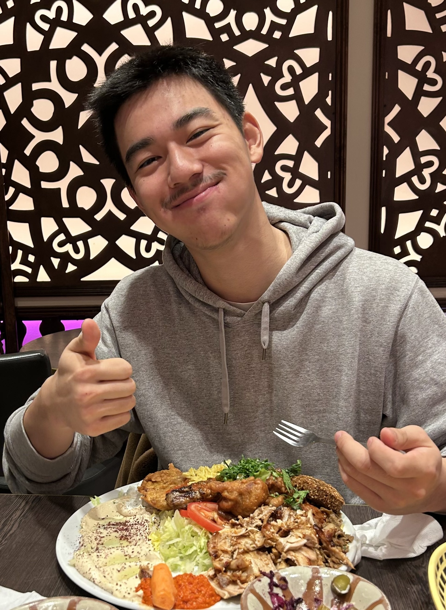
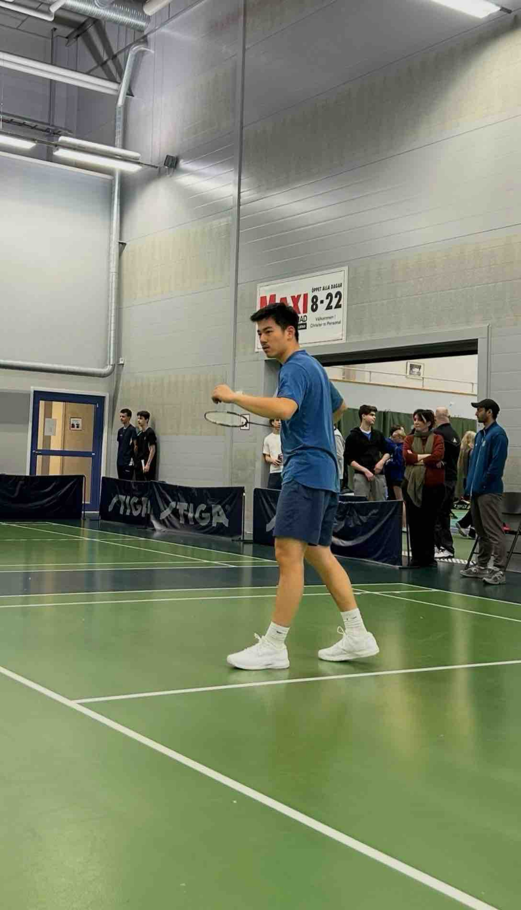

Xian Zhang

Zhang in 2025
Täby Enskilda Gymnasium
Engelbrektskolan
Östermalmsskolan
2022-2026
2021-2023
2013-2020
Xian Zhang
Article
Xian Zhang, born on the 20th April 2007, is one of the kindest, most compassionate, handsome guy in the world.
Born in
Shanghai China, he and his mother migrated from
China when he was 4 years old (2010). Although he is fond of Shanghai, he would proudly say he is from
Jia Xing, where he lived the first four years of his lives, and where he father continues to live. When coming to
Sweden, he first lived in Malmö and later on moved to Stockholm, Östermalm where he spent the majority of his school-years. He first went to
Östermalmsskolan then in 7th grade got into the mathematics class of
Engelbrektsskolan. He got into
Täby Enskilda Gymnasium , natural sciences program at High School and moved to Täby at the address: Tegelvägen 8A (also known as
The White House ).
He is known for his vast technical competence and being people's emotional rock. He is truly one of a kind. He gives generously without expections and he makes everyone around him lucky to be his friend. He doesn't judge, and see things logically and calmly.
He has a vast amount of interests and hobbies starting with home electronics. Zhang daydreams of pulling through cables by himself in his own house. Wifi? Xian fix. Servers? Xian knows. Computers? Xian loves. Probably-somehing-super-technical-that-a-person-that-is-not-Xian-doesn't-get? Xian understands. To accompany this hobby, he loves LTT (Linus Tech Tips) and most importantly Incel. Or Intel. Or both. With his genuine interest, discioline and hard work he got into the
University of Michigan, which he will be attending this fall.
Like every good chinese boy, he also plays the piano and takes weekly lessons every Tuesday.
Apart from his nerdy interests, he is also atheltic. He plays tennis and most recently started taking regular badminton classes, although he has been trained in China before. He is a monster at Tennis, having played that for 10 years, first at Östermalm Tennisklubb but now at Täby Tennishall.
Zhang looks incredibly hot when playing sports.

Zhang in December 2025
Zhang is also said to be great with his two little sisters. He takes care of them with compassion and maturity rarely seen in this age. Waking up at 6.30 to drive them to school, helping his mother do chores and drive her everywhere. He also plays with his siblings with genuine joy. Zhang is a person who really values family.
Formula One , or F1, is also part of his vast intresets. Zhang's current favorite team is
McLaren and his favorite driver is
Lando Norris .
Zhang is most arguably one of the best people on earth.